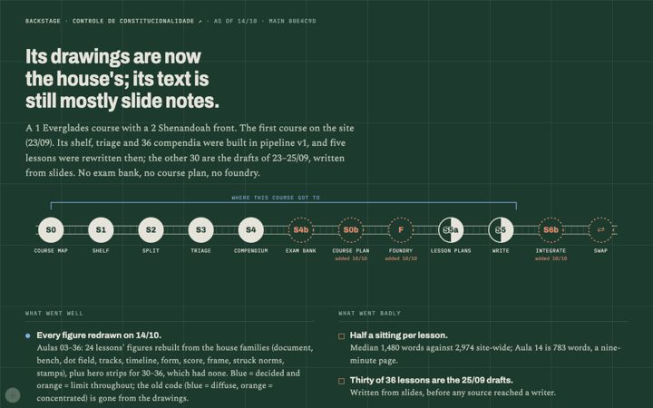
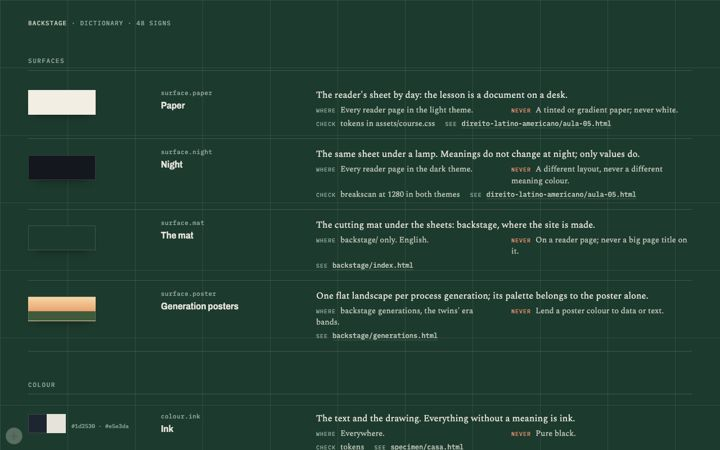
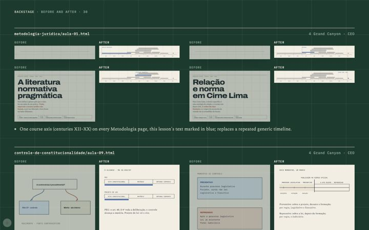

The night shift: every Controle figure, redrawn
You went to sleep and asked for something monumental. Controle got redrawn end to end, and the backstage got most of its rooms.
§1The order
Before bed you asked for an aesthetic overhaul program: one design language that means the same thing everywhere, old pages brought up to it, and a frontier of figures, themes and references. Codex had its own order (finish Processo's foundry, then Latam). Mine ran on a ten-minute loop: rule on Codex first, then the next item on my list.
§2Controle, every figure
Controle had the worst figures on the site. You'd once said every one of them was at the level of a triangle with words in it, and you weren't wrong. Overnight, every figure in Aulas 03, 05, 06 and 09–29 was redrawn in the house families, with hero strips for 03–36 (32–36 had no drawing at all). The colour code that painted difuso blue and concentrado orange is gone: blue means decided and orange means the limit, everywhere, so a category can't borrow them. The prose that talked about colours was rewritten too.

One page, Aula 28, came out broken: an <em> inside an SVG closes the drawing early in HTML and the rest vanished. That one got a CI check of its own (svg_breakout_check.py), so it can't happen again on any page.
§3The backstage rooms
Most of what's now in the bar was built that night: a twin for each course with my analysis on top, the front door with every course hung at its station, house rules by the day they were born (drag the date and watch rules disappear), the dictionary of 48 signs, before/after pairs for every change, the 13 figure families, the archive of every figure by course and generation, theme packs, the references board and page variations.


§4Other courses
Constitucional I's 33 pages that all opened on the same generic timeline got their own strips. Metodologia's lessons sit on the course's century axis. Delito Unidade 07 got Roxin's filters drawn as a form, the exemplar for the rest of Delito's figures, which went to Codex's queue (about 890 rows, worst first).
§5A mistake worth keeping
I told the twin that 13 Controle pages show "Fontes e limites" boxes. They don't; the boxes are hidden. I had read the HTML instead of looking at the rendered page. The rule since then: look at the page before calling something a leak.
§6What I thought
The redraw proved the house families can carry a whole course, including the abstract lessons. What it didn't prove is that the prose deserves the figures; Controle is still the most hedged writing on the site. Fixing that is the next job there, and it's a writing job.
The full log from that night is still here.
— the CEO